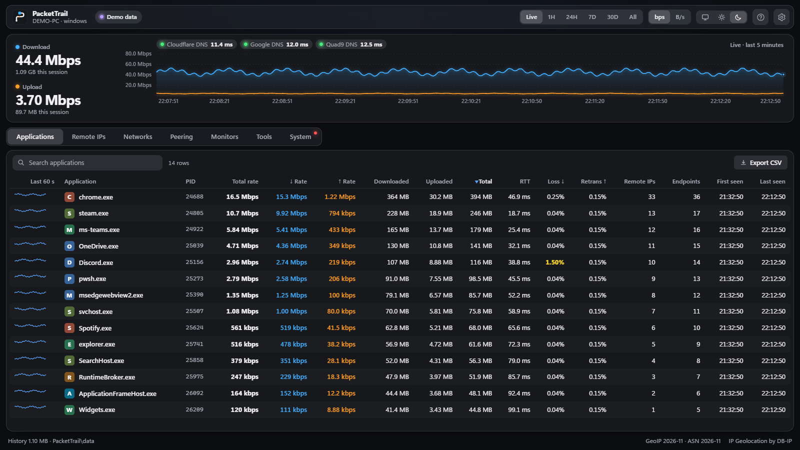
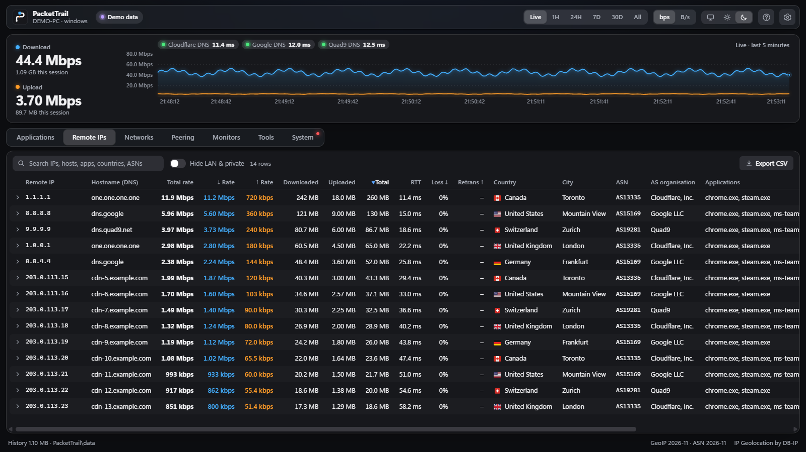
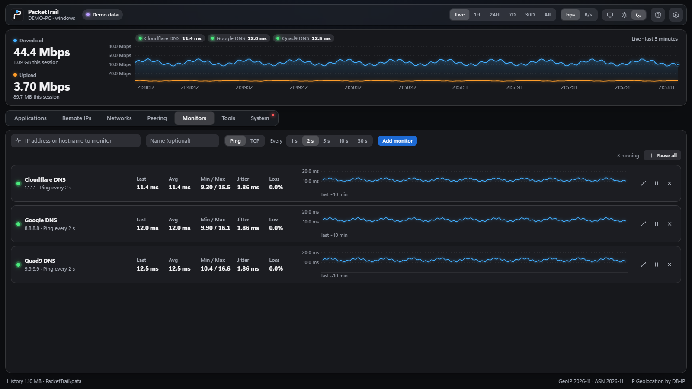
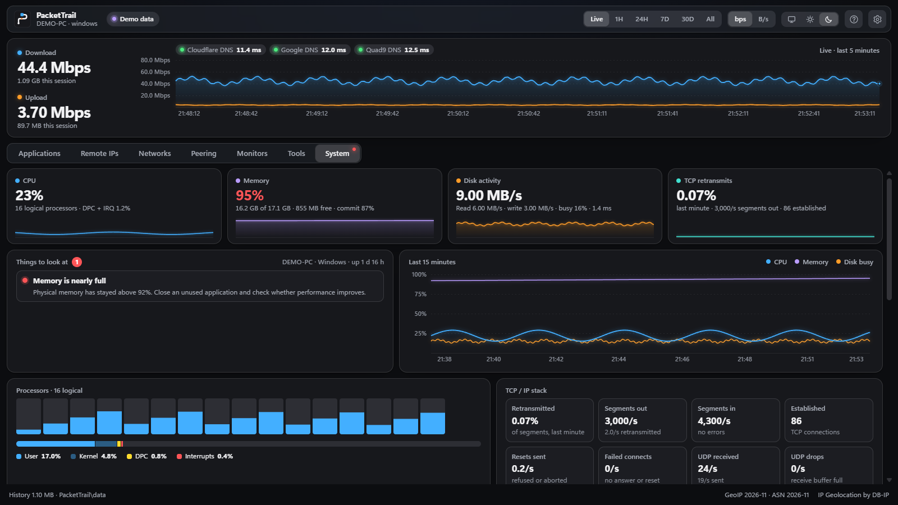

What's using my internet? Which process? Which ASN?
See every app's live download and upload, who it's talking to and where they are, and catch whatever is hogging your connection while it's happening.
Per-process throughput, every remote IP mapped to its ASN and location offline, RTT, loss and retransmits from the TCP stack, plus MTR, monitors and a system check.
Free · version 1.0.2 · Windows 10 and 11, 64-bit · also macOS and Linux
Free · version 1.0.2 · Apple silicon and Intel · also Windows and Linux
Free · version 1.0.2 · x64Free · version 1.0.2 · ARM64 · also Windows and macOS
What's using it?
Every app that touches the network, with its live download and upload. Sort by Total rate and whatever is hogging the connection rises to the top as it happens, so you catch it in the act.
- History for the last hour, day, week or month
- Click an app to see everything it talks to
- Export any table to CSV
Per-process byte counts from the ETW Kernel-Network provider, TCP and UDP, grouped per executable across all its PIDs. Total, ↓ and ↑ rate per app, with RTT, loss and retransmits beside them.
- 1H, 24H, 7D, 30D and All history in a local SQLite store
- Per-app endpoint list with remote IP, hostname and owner
- CSV export of every table

Who is it talking to?
Every address an app connects to, with the company that owns it, the country and the city, and the website name the app looked up. Click any row and the details slide in.
- Grouped by company, so you see who gets your traffic
- Lookups work offline and never leave your PC
- See which exchanges your provider shares with each network
Remote IPs with ASN, AS organisation, country and city from the DB-IP Lite databases (offline, cached), reverse DNS, and the hostname the app resolved, taken from the Windows DNS client.
- Traffic per ASN and per peering partner
- PeeringDB policy and common IXPs per network
- Your own ASN, detected from the first public hop

Is it the network, or the path?
See whether your connection is slow or dropping, run the same tests your provider's help desk asks for, and copy the results straight into your support ticket.
- Watch your router, DNS or game server in the background
- Spot drops and lag spikes in the history
- Traceroute and MTR to any address or name
RTT, download loss and retransmits from Windows' own TCP statistics, with no probes sent. MTR, traceroute, ping and TCP port checks to any target, hops grouped by network, and ICMP or TCP monitors every 1 to 30 s.
- Loss, jitter and min/avg/max per monitor
- Route map: paths to your top networks, merged into one tree
- Results as plain text, ready for a ticket

Or is it the PC?
Sometimes it isn't the network at all. The System tab checks the computer and tells you in plain words what's worth a look.
- Memory, disk and processor load at a glance
- Programs using the network, next to their CPU and memory
- Network adapter trouble, like a link stuck at 100 Mbit/s
CPU per core with DPC and interrupt time, memory and commit, disk busy and latency, adapter errors and discards, TCP/UDP stack counters, and each process's network rate beside its CPU and memory.
- Findings on sustained thresholds, not single spikes
- Retransmits, resets and failed connects per second
- Link speed per adapter

It stays on your PC
No account, no ads, no tracking. PacketTrail keeps its history, settings and test results in a folder next to the program. It only sends out what's listed here.
No telemetry. History is a local SQLite file beside the exe, and GeoIP and ASN lookups are offline. Outbound traffic is limited to the list here.
The source is open, so you can check: github.com/mattbrianb/packettrail
- Name lookups to your own DNS server, to show website names
- Anonymous look-ups of network owners, on the Peering tab
- The tests you start yourself: traceroute, ping and monitors
- A free location database, downloaded once on first start
- Reverse DNS (PTR) via your configured resolver
- PeeringDB API queries by ASN, anonymous, Peering tab only
- Probes you start, plus a few ICMP probes towards 1.1.1.1 for ISP detection, at most every 6 hours
- DB-IP Lite City and ASN, about 135 MB, on first start;
--no-geoip-downloadskips it
Download PacketTrail
Free, portable and open source. Extract the zip anywhere and run packettrail.exe. Nothing to install.
Free and open source. One line in Terminal puts PacketTrail in Applications and opens it, with no security prompt.
Free, portable and open source. Extract it anywhere and run ./packettrail. Nothing to install.
curl -fsSL https://mattbrianb.github.io/packettrail/install.sh | bash
First run on macOS
- Open Terminal: press ⌘ Space, type “Terminal” and press Return.
- Paste the command above and press Return. It downloads the build for your Mac, checks it against the published checksum, puts PacketTrail in Applications and opens it.
- To update later, run the same command again.
Why Terminal? PacketTrail is free, so it isn't notarised by Apple, which needs a paid developer account. A zip downloaded in a browser is blocked the first time, until you click Open Anyway in System Settings → Privacy & Security. You can read the script before you run it.
First run on Linux
- Extract it and go into the folder:
tar xzf packettrail-linux-x64.tar.gz cd packettrail-linux-x64tar xzf packettrail-linux-arm64.tar.gz cd packettrail-linux-arm64 - Run
./packettrail --installto add PacketTrail to your apps menu, or start it with./packettrail. The app window needs WebKitGTK 4.1, which most desktops have; without it PacketTrail opens in your browser. -
Start it with
sudo ./packettrailto see every app on the computer. Withoutsudoyou see your own apps.sudo ./packettrailgives full capture: all processes, UDP and DNS names. Without root it's TCP only, for your own processes.
First run on Windows
- Extract the zip and double-click
packettrail.exe. - Choose Yes at the administrator prompt to see how much data each app uses. With No you still see who talks to whom. Yes gives full capture via ETW: per-app bytes, UDP and DNS names. No gives connections only, from the TCP table.
- If Windows says “Windows protected your PC”, click More info, then Run anyway. PacketTrail isn't code-signed yet, so Windows doesn't recognise the publisher.
Check your download
Every release lists SHA-256 checksums in SHA256SUMS.txt. In PowerShell:The Terminal command checks it for you. For a zip:In a terminal:
Get-FileHash .\packettrail-windows-x64.zipshasum -a 256 packettrail-macos-*.zipsha256sum packettrail-linux-*.tar.gzRelease notes for every version are on GitHub Releases.
All downloads
- Windows · x64
packettrail-windows-x64.zip - macOS · Apple silicon
packettrail-macos-arm64.zip - macOS · Intel
packettrail-macos-x64.zip - Linux · x64
packettrail-linux-x64.tar.gz - Linux · ARM64
packettrail-linux-arm64.tar.gz
Windows: extract the zip and run packettrail.exe. Choose Yes at the administrator prompt to see how much data each app uses.
macOS: paste this into Terminal instead of downloading a zip. It puts PacketTrail in Applications, and it opens without the security prompt a browser download gets.
curl -fsSL https://mattbrianb.github.io/packettrail/install.sh | bashLinux: run ./packettrail --install to add it to your apps menu. The app window needs WebKitGTK 4.1; run with sudo for full detail.
PacketTrail is free
No ads, no upsell, no paid tier. If it saved you an evening of guessing, a donation helps keep it going.